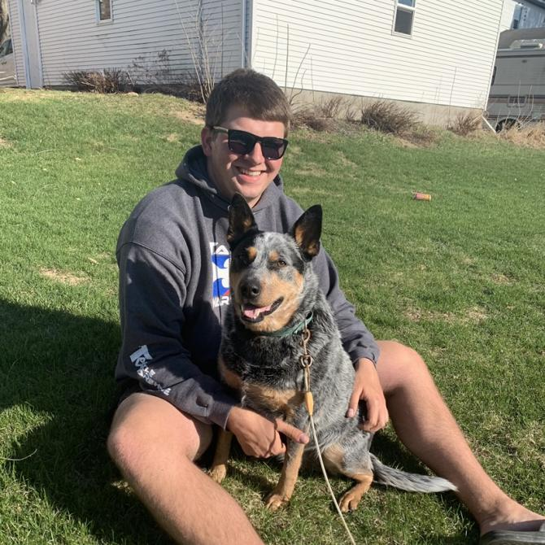
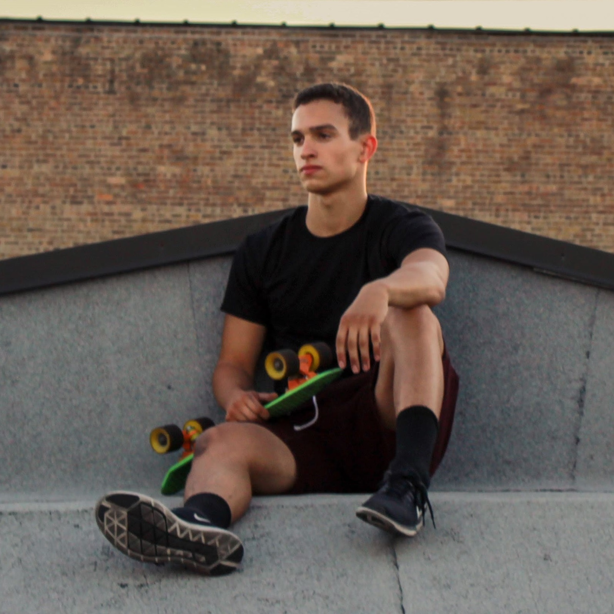

Steven Sheets - Backend Engineer, Test Engineer, Report Manager
Like many people in this course, Steven is a Senior in Software Engineering, graduating Spring 2021. He interned at Workiva for a year, and has experience with both frontend and backend development, albeit he prefers backend. At the current stage of the project, Steven, alongside his teammates, is eager to begin implementation. Before COVID hit, you would likely find him chilling in the TLA in Coover, and if you were lucky, you may have found him napping on the couches.
Logan Anderson - Frontend Engineer, Test Engineer
Logan is a Senior in Computer Engineering graduating in Fall 2021. He has worked an internship in the past. he has the most experience with frontend and prefers it to backend. He is ready to start the technical implementation of the project next semester.
Nicholas Heger - Frontend Engineer, Progress Manager
Nicholas is a Senior majoring in Computer Engineering with a Software Emphasis graduating in the Spring of 2021. He has had two summer internships at Workiva and currently works there part-time. He has both frontend and backend experience, but prefers frontend given the choice. Nicholas is looking forward to beginning the implementation of this senior design project shortly. A fun fact about him is that he enjoys rock climbing.
Jared Weiland - Backend Engineer
Jared is a Senior in Software Engineering, graduating Spring 2021. He is currently an intern at MidAmerican Energy Company where he works on both front and backend development. He is also looking forward to beginning the project implementation.
James Volpe - Frontend/Backend Engineer
James is also a Senior in Software Engineering, graduating Spring 2021. He interned at National Public Radio (N.P.R) and Workiva. While his focus is software development, he also ventures into UI/UX design and computer engineering as well. When he's not coding, he enjoys playing guitar in his band, writing music, photography, and weightlifting.